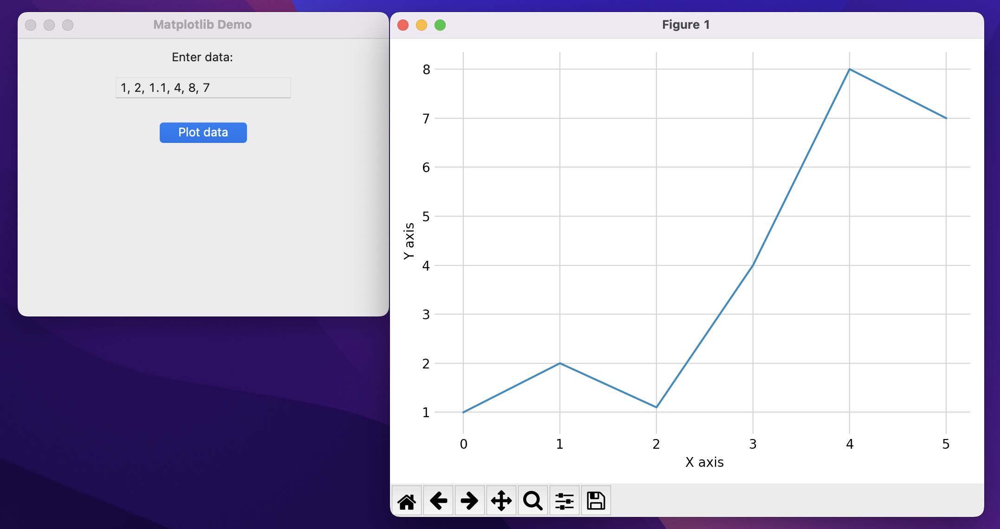

Below is an example of using Matplotlib to plot data in a Tkinter app. The plot figure is shown in a separate window when the button is pressed.
import tkinter as tk
from tkinter import ttk
import matplotlib.pyplot as plt
class MyApp:
def __init__(self, root):
self.root = root
self.data = tk.StringVar()
self.configure_window()
self.create_widgets()
def configure_window(self):
self.root.title('Matplotlib Demo')
self.root.geometry('400x300')
self.root.resizable(False, False)
def create_widgets(self):
ttk.Label(text='Enter data:').pack(pady=10)
ttk.Entry(textvariable=self.data).pack()
ttk.Button(text='Plot data', command=self.create_plot).pack(pady=20)
def create_plot(self):
# Get numbers from entry
data = self.data.get().split(', ')
numbers = list(map(float, data))
# Create plot
fig, ax = plt.subplots(tight_layout=True)
ax.plot(numbers)
ax.set_xlabel('X axis')
ax.set_ylabel('Y axis')
ax.grid(color='0.8')
ax.set_frame_on(False)
ax.tick_params(color='0.8')
# Show window containing the plot figure
plt.show()
if __name__ == '__main__':
root = tk.Tk()
MyApp(root)
root.mainloop()

Pythonic Programming © 2025
Built with Genja by Gavin Wiggins